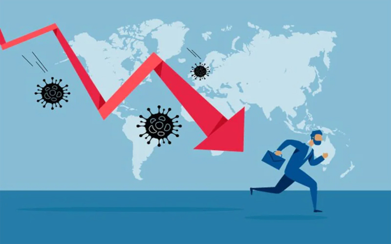

The Coronavirus pandemic has exerted a gigantic pressure on the American society and forced a host of changes to how we live, work, and
leisure. The hope of the older and familiar ways come back but the prices and the cost of the life that probably don’t.
The experts say some the adaptations have accelerated some of the trends, the cashless society advanced some years in months, the remote work finally is here for a great percentage of the society.
One of the causes that produce more tremble in the heart of the population is the treat of a new Great Depression that some predict that can be even more devastating than those who marked some generation in 20th century.
The other impact is the psychological, the people when the place where they work disappears, those who invest witness how their business crash and burn, when the young have a hardest path to find their place in the world. All those cause heavy impacts in the minds of the people and rise the percentage of the people who will develop more psychological pathology. That ongoing uncertainty takes a big toll.
There is no doubt our generation will be a one who will not have easy to increase our patrimony and give a good heritage to the next generations. But our ancestor they survived even in worst conditions. Definitively, we can do it.
The experts say some the adaptations have accelerated some of the trends, the cashless society advanced some years in months, the remote work finally is here for a great percentage of the society.
One of the causes that produce more tremble in the heart of the population is the treat of a new Great Depression that some predict that can be even more devastating than those who marked some generation in 20th century.
The other impact is the psychological, the people when the place where they work disappears, those who invest witness how their business crash and burn, when the young have a hardest path to find their place in the world. All those cause heavy impacts in the minds of the people and rise the percentage of the people who will develop more psychological pathology. That ongoing uncertainty takes a big toll.
There is no doubt our generation will be a one who will not have easy to increase our patrimony and give a good heritage to the next generations. But our ancestor they survived even in worst conditions. Definitively, we can do it.